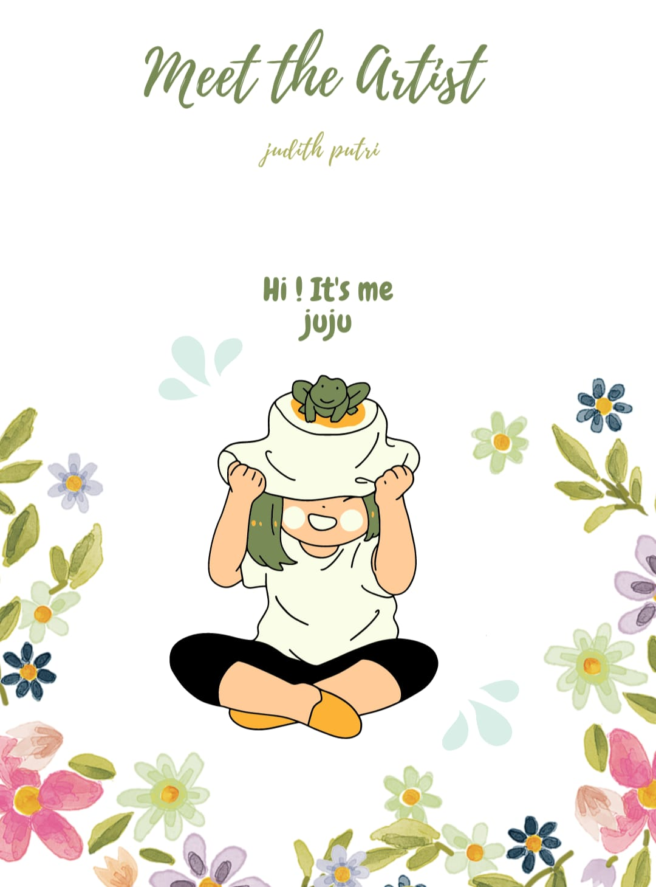
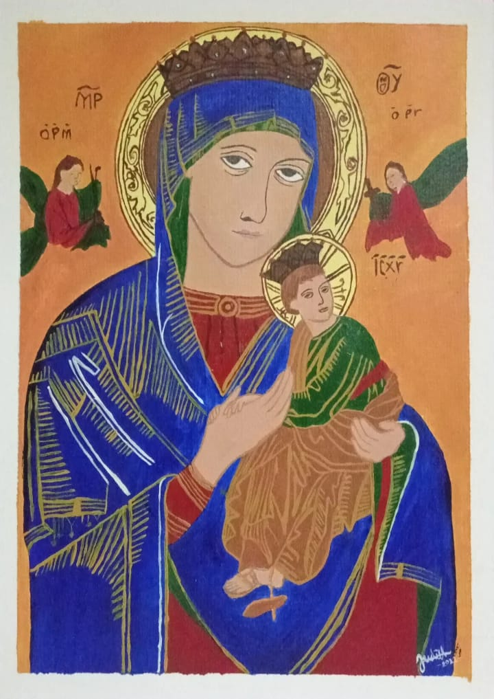

Hello there! It's me Judith Putri Permadi
You can call me juju. I'm a teenager who loves art. I'm 16 years old and I'm from Java, Indonesia. Now I'm a high school student. I like to learn new things that can be useful for the future.
How long did it take to learn to paint?
I have studied painting for about 3 years. I started in 2020, where painting became a way of healing and therapy for me. Because, I can express my feelings through painting.
Current goal
Currently, I am focusing my paintings on the theme of "Catholic". If you want to see my paintings with other themes, you can check them out in the "Projects" section. And that's a little bit about me. I hope it can inspire all of you to express more of your emotions and feelings through artwork. So, what is your best form of healing?
Introducing my favorite painting "Our Lady of Perpetual Help"
June 27 is the feast day of Our Mother of Perpetual Help, who is known for miracles and answers to prayer. It is associated with a 15th-century Byzantine icon of the Madonna and Child, which is copied in mosaic in the Our Mother of Perpetual Help Chapel in the Basilica.
Mother of Perpetual Help at the Basilica
The Mother of Perpetual Help Chapel in the Basilica features a mosaic reproduction of the Mother of Perpetual Help icon. Mary comforts the Child Jesus as he turns in fear from the Archangels Michael and Gabriel, who brandish the instruments of the passion. Surrounding the icon are Botticino reredos depicting saints including Alphonsus Liguori and Luke the Evangelist.
Details of this painting
I tried to paint "Our Lady of Perpetual Help". I used acrylic paints and A4 sized watercolor paper.

Art is a means of therapy for an artist.Our feelings can be poured into a painting, sad or happy. We can express all that into it and that is art.
Art is a very beautiful thing, if you observea work of art carefully then you will find the hidden meaning in it, that is the implied meaning.